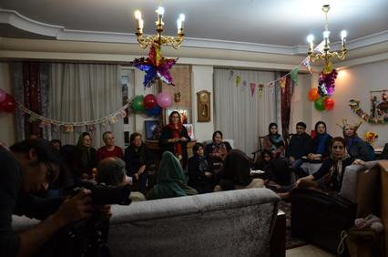
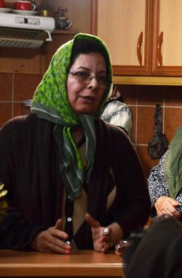
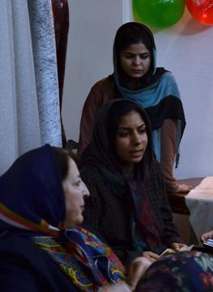
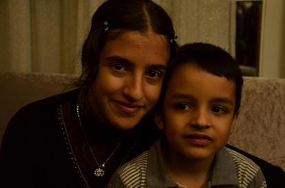
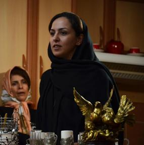

|
|

نسرین ستوده و مقاومتی ستودنی؛ به مناسبت تولد مهراوه دختر نسرین ستوده و مقارن با سی و نهمین روز اعتصاب غذای او
جمعه3 آذر 1391
تغییر برای برابری:روز گذشته جمعی از فعالین حقوق زنان و فعالین صلح به مناسبت تولد مهراوه دختر نسرین ستوده با خانواده وی دیدار کردند.

در این دیدار که مقارن با سی و نهمین روز از اعتصاب غذای نسرین ستوده نیز بود، تعدادی از حاضرین در رابطه با اهمیت این اعتراض و بیان مطالبات ستوده صحبت نمودند.

پروانه آل بویه به نمایندگی از مادران صلح از خانواده ستوده تقاضا کرد تا از جانب جمع از نسرین بخواهند که به اعتصابش پایان دهد چرا که در شرایط فعلی حفظ جان او از هر چیز برای خانواده و جامعه مهم تر است. جباری از موسسان کارزار صلح و دیگر فعال این حوزه نیز ضمن تاکید بر همین درخواست و قدردانی از ستوده به خاطر پایداریش تاکید کرد که حفظ جان ستوده برای رقم زدن فردایی بهتر برای جامعه از هر چیز ارزشمندتر است.

اما درخواست پایان اعتصاب غذا به گونه ی دیگری نیز در این دیدار مطرح شد. دکتر فرهاد میثمی که بیش از یک هفته است که برای درخواست پایان اعتصاب غذا از ستوده خود دست به اعتصاب غذا زده است در توضیح حرکت خود گفت: من به دنبال راهی بودم که هم تاثیر گذار و هم حاکی از همراهی با او باشد. موقعیت بسیار حساس است و تنها درخواست شفاهی یا نوشتن نامه به او برای شکستن اعتصاب کافی نیست. وقتی او ابزاری جدی برای بیان مطالباتش برگزیده برای درخواست از او نیز باید از ابزاری جدی استفاده نمود.

در ادامه ستاره هاشمی به نمایندگی از گروه تا قانون خانواده برابر در رابطه ارزشمندی اعتراض نسرین صحبت کرد و گفت: چیزی که مقاومت نسرین ستوده را بسیار واجد ارزش میکند صرفا مقاومت یک زن در برابر خودکامگی حاکمیت نیست بلکه ایستادگی در برابر جدا افتادگی است که بخش زیادی از جامعهی ما را فرا گرفته، نوعی از فردگرایی که شکلی از آن انزوا است که آدمها خود را به شکل اشخاص جدا از جامعه میبینند. هاشمی اضافه کرد ممکن است که گفته شود عصر قهرمانها به پایان رسیده است اما آیا دوران آدمهای خوب نیز گذشته است؟

دلارام علی عضو کمپین یک ملیون امضا و از موکلین نسرین ستوده نیز در صحبت های خود بر لزوم فشار آوردن به سیستمی تاکید کرد که ستوده را برای چندمین بار در موقعیتی قرار داده که ناگزیر به اعتصاب غذا شده است. او افزود شاید زمان آن رسیده باشد که به جای فشار آوردن بر نسرین که خود در اعتراض به فشارهایی که تحمل می کند دست به اعتصاب غذا زده ، ندای اعتراض او باشیم.

نفیسه آزاد دیگر عضو کمپین یک ملیون امضا و از موکلین ستوده نیز در ادامه ضمن اشاره به این موضوع که نسرین همیشه به عنوان وکیل و حامی در کنار ما بوده است گفت: میخواهم از این فرصتی که اعتراض و اعتصاب نسرین فراهم آورده است استفاده کنم و ضمن تبریک به مناسبت آزادی زینب بایزدی پس از تحمل بیش از 4 سال حبس بدون مرخصی اشاره ای به شرایط فعالین اجتماعی – سیاسی زندانی در دیگر شهر های ایران کنم و با توصیف شرایط برخی از آنها یادآوری کرد که نباید آنان را فراموش کرد.
در پایان حضار با آرزوی رسیدن نسرین به تقاضاهای قانونی خود و پایان اعتصاب غذا و سلامتی وی مراسم را خاتمه دادند. این در حالیست که با گذشت سی و نه روز از اعتصاب ستوده نگرانیها در مورد سلامت وی جدی است.
گزارش سایت تا قانون خانواده برابر: سی و نهمین روز اعتصاب نسرین ستوده و تولد 13 سالگی مهراوه